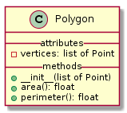

Héritage corrigé
Auteurs :But
Éléments de corrigé de la séance héritage.
Séance tableau
Exercice 1
L’idée est juste de présenter avec quelque chose de simple et facile à se représenter la notion d’héritage. On donnera l’UML des classes dans tous les cas et le code seulement s’il est lié à l’héritage.
Classe Point :

Rien de particulier, pour la classe Polygon qui est une agrégation avec points :

C’est bien une agrégation puisque utilise des objets Point comme attribut mais ces points existent indépendamment du polygone et on les ajoute dans l’attribut vertices lors de la création de l’objet.
Classe Triangle:

L’héritage arrive ici. On fait une version restreinte du polygone très simple. La classe Triangle hérite de Polygon, on appelle donc le constructeur de ce dernier lors de la création d’un Triangle.
Ceci est explicite en python :
class Triangle(Polygon):
def __init__(self, point1, point2, point3):
super().__init__([point1, point2, point3])
Le mot clé super() désigne la classe parente, ici Polygon.Ce mot clé permet d’utiliser toutes les méthodes de la classe parente, ici __init__. Remarquez que l’on utilise la méthode __init__ sans utiliser le premier paramètre (self) qui est implicitement l’objet courant.
L’UML complet donne donc :

Exercice 2
La classe Personnage ne pose normalement pas de problèmes :

On précise le code de taper et se_faire_taper qui permet à chacun de se faire taper comme il l’entend :
def taper(self, personnage):
personnage.se_faire_taper(self)
def se_faire_taper(self, personnage):
self.set_vie(self.get_vie() - personnage.get_attaque())
On ajoute la guerrière :

On donne ci-après une partie du code de la guerrière (on a en particulier pas écrit la méthode bloque qui fait le tirage pour savoir si on bloque ou pas). Faites attention et comprenez bien :
- l’appel à
super().__init__()au début du constructeur de la classe fille, - qu’on ajoute un attribut à la guerrière par rapport au personnage normal,
- la méthode
se_faire_taper(personnage)utilise la méthodese_faire_taperde la classePersonnageseulement si la guerrière ne bloque pas le coup. Lesuper().methode_de_la_mere()permet d’accéder à la méthode de la classe mère même de même nom qu’une méthode (différente) de la classe fille.
class Guerriere(Personnage):
def __init__(self, vie, attaque, blocage):
super().__init__(vie, attaque)
self.blocage = blocage
def se_faire_taper(self, personnage):
if not self.bloque(personnage):
super().se_faire_taper(personnage)
Prenez le temps de faire des exemples d’utilisation et de vérifier que tous les cas marchent. En particulier qu’est-ce qui est appelé quand on fait guerriere.se_faire_taper(bonhomme) avec un objet guerriere de la classe Guerriere ?
Le magicien permet de montrer l’ajout d’une méthode qui n’était pas du tout dans la classe mère :

Le code n’est pas difficile, on se passera donc de l’écrire complètement. Il faut :
- ajouter une méthode
lancer_sort - ajouter un paramètre et son attribut associé
attaque_magiqueau constructeur - ajouter une méthode
se_faire_toucher_par_un_sort(magicien)avec un paramètre de type Magicien dans la classe Personnage.
Nota Bene : Ces exemples sur l’héritage sont un peu forcés. C’est parce que l’héritage n’est que très peu utilisé en code pure. Il est même considéré comme préjudiciable dans la plupart des cas (voir )là ou encore là).
Un cas d’utilisation reconnu est cependant lorsque l’on veut utiliser des classes définies dans un module quelconque et la mettre un peu à notre sauce. Comme dans des bibliothèques graphiques par exemple.
séance code
Les bases de l’héritage
N’oubliez pas l’appel du super().__init__(). Si vous avez du mal à comprendre le code, n’hésitez pas à revenir aux namespaces.
StatDice
On réécrit uniquement la fonction set_position car on l’utilise dans le roll de Dice du corrigé des dés. Faites attention et comprenez
le super().set_position(new_position) qui permet de réutiliser les choses écrites dans la classe mère même si on définit une méthode du même nom.
class StatDice(Dice):
def __init__(self, position=1):
super().__init__(position)
self.memory = {value: 0 for value in range(1, self.NUMBER_FACES + 1)}
def get_memory(self):
return self.memory
def set_position(self, new_position):
super().set_position(new_position)
self.memory[new_position] += 1
def stats(self):
n_roll = sum(self.memory.values())
return {value: self.memory[value] / n_roll for value in self.memory}
def mean(self):
n_roll = sum(self.memory.values())
return sum(value * self.memory[value] for value in self.memory) / n_roll
PlantUML
Pour https://www.planttext.com/
@startuml
class Point {
___attributes
- x: float
- y: float
__methods__
+__init__(float, float)
+get_x(): float
+set_x(float)
+get_y(): float
+set_y(float)
+distance(Point): float
}
class Polygon {
__attributes__
- vertices: list of Point
__methods__
+__init__(list of Point)
+area(): float
+perimeter(): float
}
class Triangle {
__methods__
+ __init__(Point, Point, Point)
}
Polygon <|-- Triangle
Polygon o-- Point
@enduml
@startuml
class Personnage {
___attributes__
- vie: int
- attaque: int
__methods__
+__init__(vie, attaque)
+get_vie(): int
+set_vie(int)
+get_attaque(): int
+set_attaque(int)
+taper(Personnage)
+se_faire_taper(Personnage)
}
class Guerriere {
__attributes__
- blocage: int
__methods__
+__init__(vie, attaque, blocage)
+se_faire_taper(Personage)
}
class Magicien {
__attributes__
- attaque_magique: int
__methods__
+__init__(vie, attaque, attaque_magique)
+lancer_sort()
}
Personnage <|-- Guerriere
Personnage <|-- Magicien
@enduml